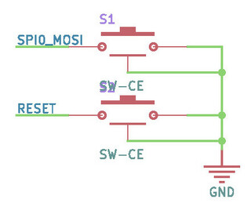
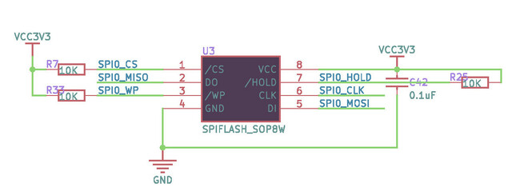
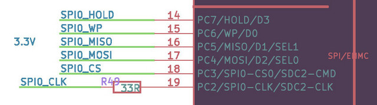
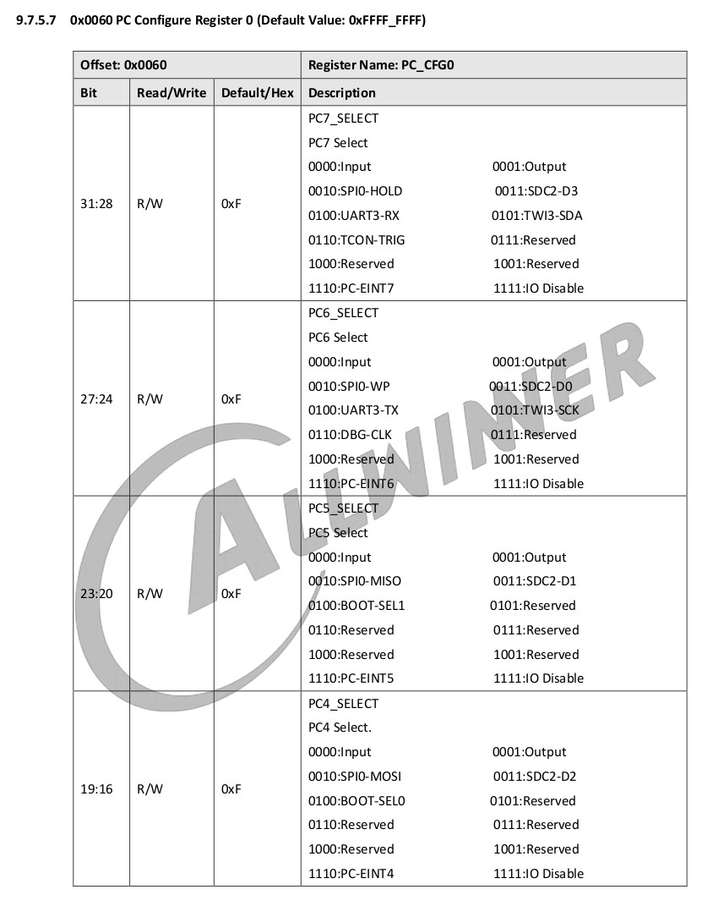
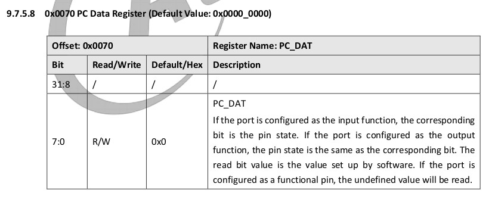
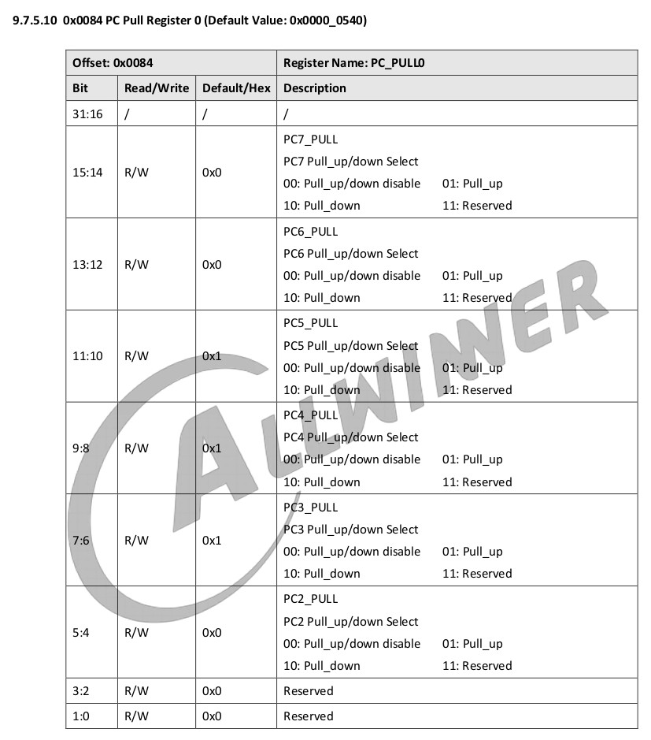
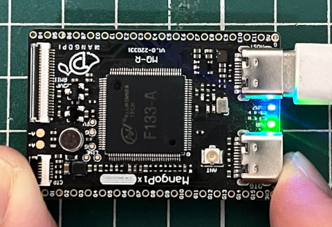

FEL按鍵是連接到SPI0_MOSI







.global _start
.equ GPIO_BASE, 0x02000000
.equ PD_CFG2, 0x0098
.equ PD_DAT, 0x00a0
.equ PC_CFG0, 0x0060
.equ PC_DAT, 0x0070
.equ PC_PULL0, 0x0084
.text
.long 0x0a00006f
.byte 'e','G','O','N','.','B','T','0'
.long 0x5F0A6C39
.long 0x8000
.long 0, 0
.long 0, 0, 0, 0, 0, 0, 0, 0
.long 0, 0, 0, 0, 0, 0, 0, 0
.org 0x00a0
_vector:
j _start
.org 0x0100
_start:
li t0, 0x00000000
li a0, GPIO_BASE + PC_CFG0
sw t0, 0(a0)
li t0, 0x55555555
li a0, GPIO_BASE + PC_PULL0
sw t0, 0(a0)
li t0, (1 << 24)
li a0, GPIO_BASE + PD_CFG2
sw t0, 0(a0)
li a0, GPIO_BASE + PC_DAT
li a1, GPIO_BASE + PD_DAT
0:
lw t0, 0(a0)
sll t0, t0, 18
sw t0, 0(a1)
j 0b
.end
完成
